building foundations of
for our digital world
How do we Trust in the Digital Age
Humanity is no longer at the crossroads between the physical and the digital — we are in the convergence.
This new era requires a different type of trust. One that allows us to know who and what we are interacting with and to have a shared understanding of what is true. One that creates accountability and allows us to build reputations.
In the past, trust was built through experience and relationships. In the future, this will be no different — but in the digital world relationships are built through transactions, and experience leaves a trail. There is potential here to build much richer relationships and to establish trust that is rooted in proof.
We can do this through the combination of:
- cryptography
- decentralized information networks
- self-sovereign identity
Our future is one of vast, accessible knowledge — it will transform the way we do everything. But how we build, share, and verify that knowledge is paramount to ensuring that transformation is for the better.
It makes no difference if you are transacting with a human or an AI Agent, if you are exchanging assets or knowledge — you must know who you are interacting with and you must rely on their reputation.
Therefore we believe the most important work to be done is the application of technology that facilitates this connectivity between knowledge and identity.
Our Principles
Isaac Asimov told a story about how three simple hierarchical rules could govern the interobjective relationship between humans and robots; these were the 3 laws of robotics. He later realized that in order for humans and robots to reach their full potential (galactic civilization) he needed to include a zeroth law to supersede all others. And it was from this law (our namesake) that he built his foundation.
At Zeroth Technology, we are optimistic about our future, but we believe it needs a solid foundation which is set correctly to give equal footing to everyone and everything. By building products that apply the latest technologies we can demonstrate how our principles can be put into action. We strive to contribute to public goods and open source projects that will change the world. We are open and transparent with our revenue models, our research, and our work. ~wagmi~
Our Approach
Our teams work across a variety of core technology development, product, and services use cases at the intersection of trust and emergent technologies including blockchain and AI.
Projects we are excited about
Click the tiles to find out more
CSER
Describing supply chain events mathematically so that claims on products can be settled in a shared execution environment.
AESOP
Our knowledge documents represent what we know and how we operate. Misinterpretation by a LLM can be dangerous. Aesop helps prevent that.
Encoding one-time biometric into a live video stream to prove you are who you say you are.
PYRANA
Enterprise-grade agentic solution platform built around our Cognitive Action Framework™.